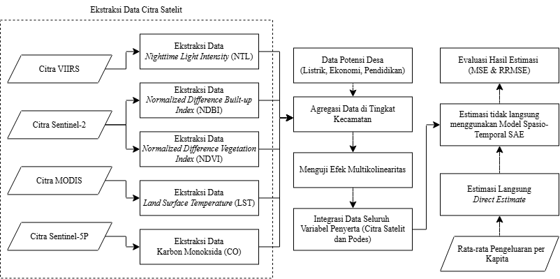

Periode observasi data: 2018 — 2021
Kecamatan
Tahun Observasi
Model Estimasi
Estimasi pengeluaran per kapita pada tingkat kecamatan memiliki tantangan berupa keterbatasan ukuran sampel dan variasi tingkat presisi antar wilayah.
Pendekatan Small Area Estimation digunakan untuk meningkatkan akurasi estimasi dengan memanfaatkan informasi tambahan berupa karakteristik wilayah, hubungan spasial, dan dinamika waktu.

Perbandingan tren estimasi langsung dan hasil estimasi ST-SAE.
Eksplorasi estimasi berdasarkan tahun dan wilayah kecamatan secara interaktif. Pilih area pada peta untuk melihat tren.
Pendekatan ST-SAE menghasilkan estimasi pengeluaran per kapita tingkat kecamatan dengan mempertimbangkan variasi spasial dan temporal yang lebih baik dibandingkan dengan Direct Estimate.
Hasil penelitian ini dapat digunakan sebagai media eksplorasi statistik wilayah berbasis data yang lebih akurat dan presisi.